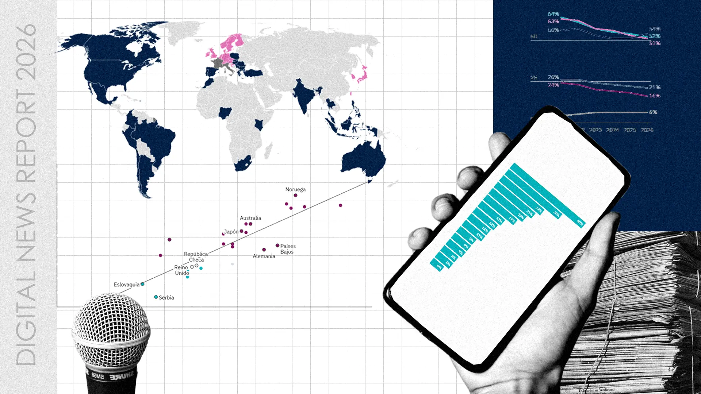
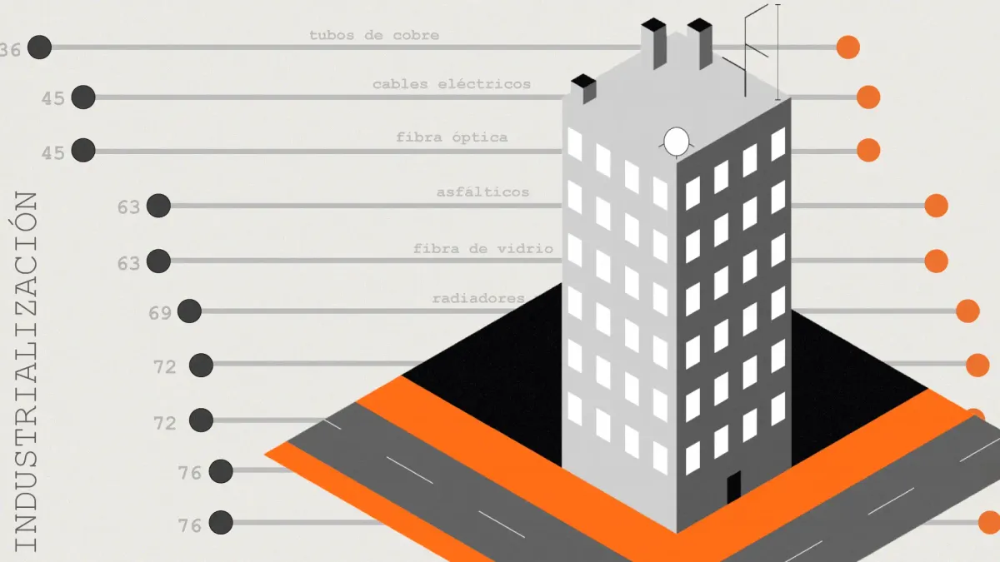

¡Te doy la bienvenida a mi porfolio!
Aquí selecciono mis mejores proyectos de periodismo de datos, infografía y desarrollo web.
También una biblioteca con todos los reportajes escritos en prensa.
Explora las diferentes categorías y mi trayectoria en las secciones superiores.

Infografía
Digital News Report 2026: La situación de los medios de comunicación en el mundo y su consumo
Apoyo gráfico extenso a través de decenas de visualizaciones de datos al principal informe anual mundial de los medios de comunicación

Infografía
Vivienda industrializada: ¿solución para la crisis habitacional que sacude España?
Un análisis de datos sobre la falta de mano de obra en el sector de la construcción y la viabilidad técnica de los modelos modulares